Oba javna servisa potvrđena na d38aa6aa35c794e06b98d79fdc4520766c1ddfb4. QA aplikacija ponovo otvorena. Prvi izbori Neona, Vaskršnje i Mesečevog Sjaja nisu bili pouzdani. Posle ponavljanja svih pet testiranih tema prikazuje svoje PNG. Povratak na Green i završni meni kompletni. Ovo nije deset uspešnih prvih izbora.
Android Activity COLD:19194ms; to nije vreme do spremnog menija. Zabeleženi beli/podložni i nepotpuni kadrovi. Nema tvrdnje da je spor start ili ANR rešen. Nema nove igre, reklame, nagrade ili DB pristupa; prvi emulator vraćen iz pauze, drugi na Green meni.
Kontroleri Top liste, Online igrača i Pozovi prijatelja. Otvaranje sobe, dinamičke kartice, deljeno oko i prazna lista u igri provereni lokalno. v6.41 nije objavljena niti potvrđena na Androidu. Ovo nisu ukupni zahtevi cele aplikacije ili dokaz uzroka ANR-a; PNG i izgled nisu menjani.
Snimak posle am-start: aktivnost je otvorena, meni nije potvrđen spremnim.

Prvi meni ima nepotpuno iscrtanu pozadinu. Kasniji kadar je potpun; ovo nije brz/stabilan prvi kadar.
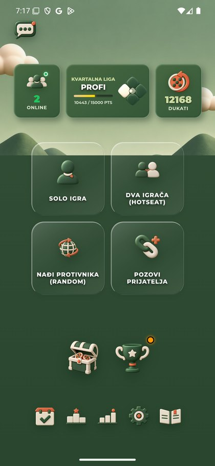
Green Podešavanja pre promene.
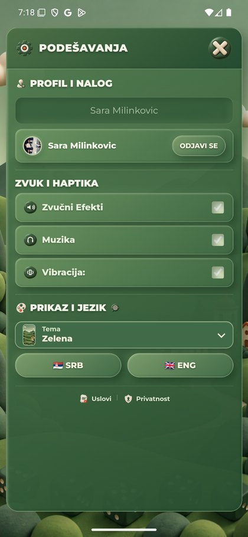
Prvi Neon izbor: priprema teme, bez potvrde primene.
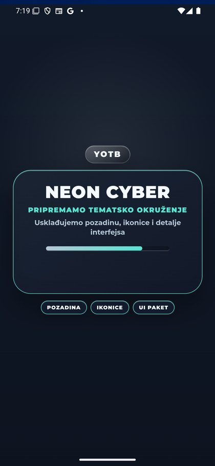
Posle prvog Neon izbora ostala je Green. Naziv fajla nije dokaz uspeha.
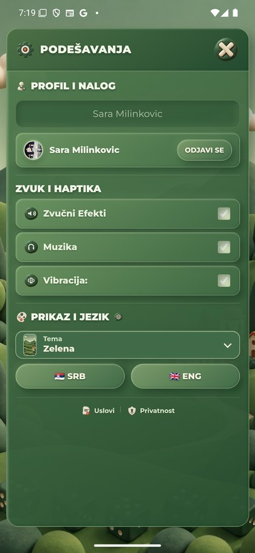
Neon konačno primenjen posle ponovljenih pokušaja; prvi emulator tada privremeno pauziran.
Prvi Vaskršnji izbor: ekran pripreme. Naredni kadar ostao Neon.
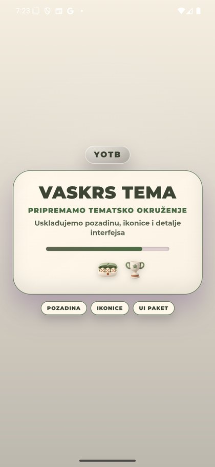
Naknadni kadar i dalje Neon; prvi pokušaj nije prihvaćen kao uspešan.
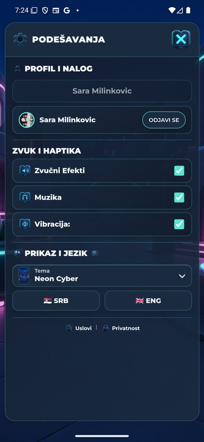
Ponovljeni izbor: Vaskršnja Podešavanja sa njenim PNG.
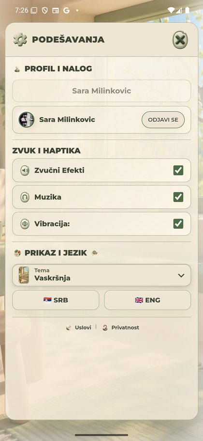
Priprema Svetlog Zlata. Kasniji Windows pregled potvrdio je kompletna Light Podešavanja jednim izborom; taj kasniji kadar nije ovaj PNG.
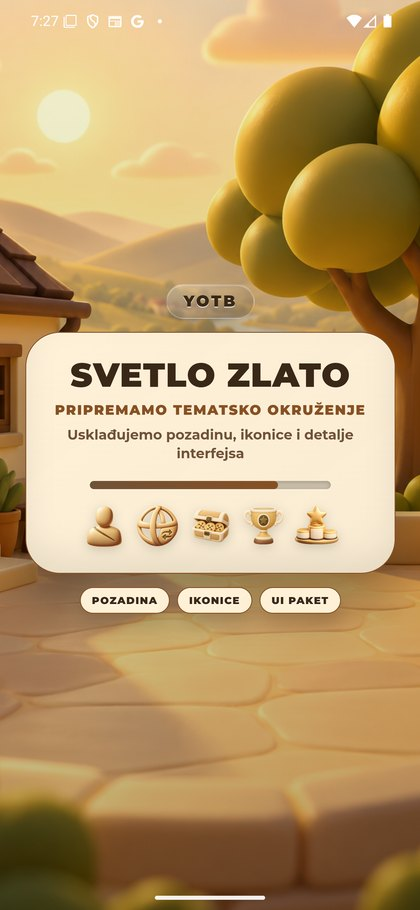
Prvi Mesečev izbor: ekran pripreme. Kasniji Windows pregled pokazao je da je ostalo Svetlo Zlato.
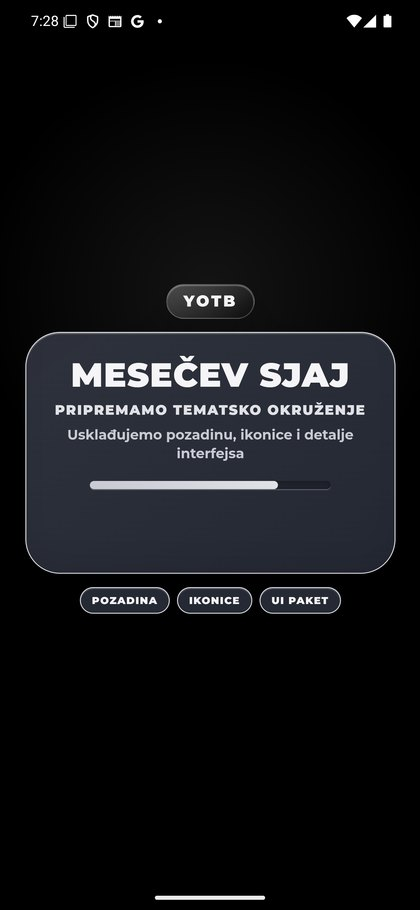
Ponovljeni izbor: Mesečev Sjaj sa njegovim PNG.
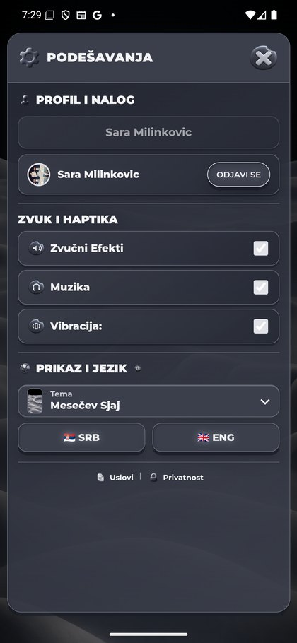
Priprema povratka na Green posle četiri druge teme. Kasniji Windows pregled potvrdio Green Podešavanja; sledeći PNG potvrđuje konačni meni.
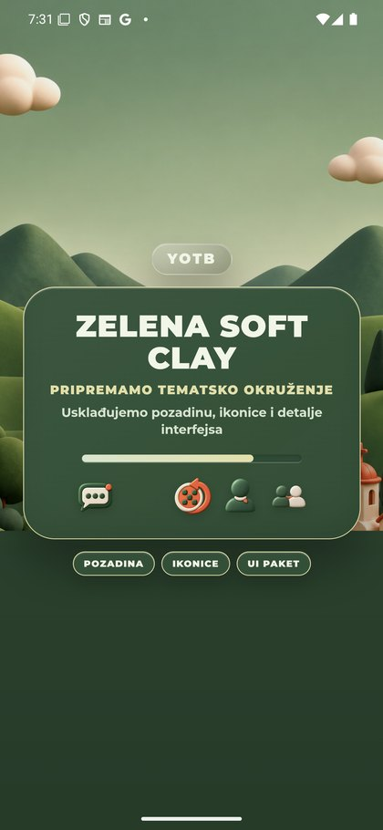
Završni Green meni: sve glavne ikone i pozadina ponovo vidljivi.
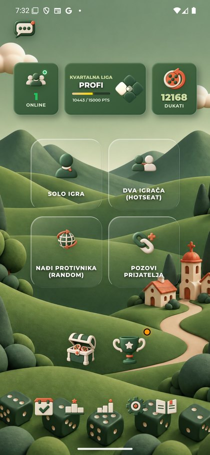